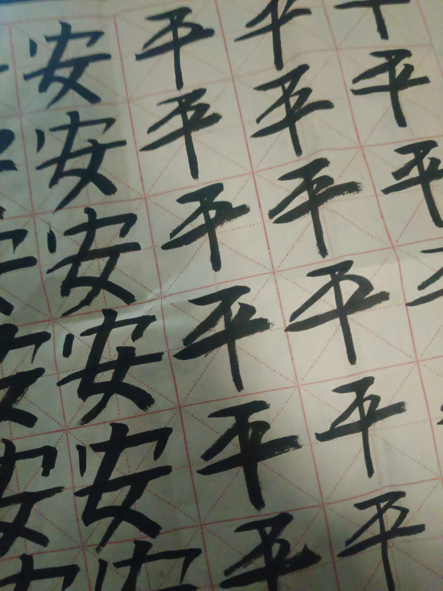
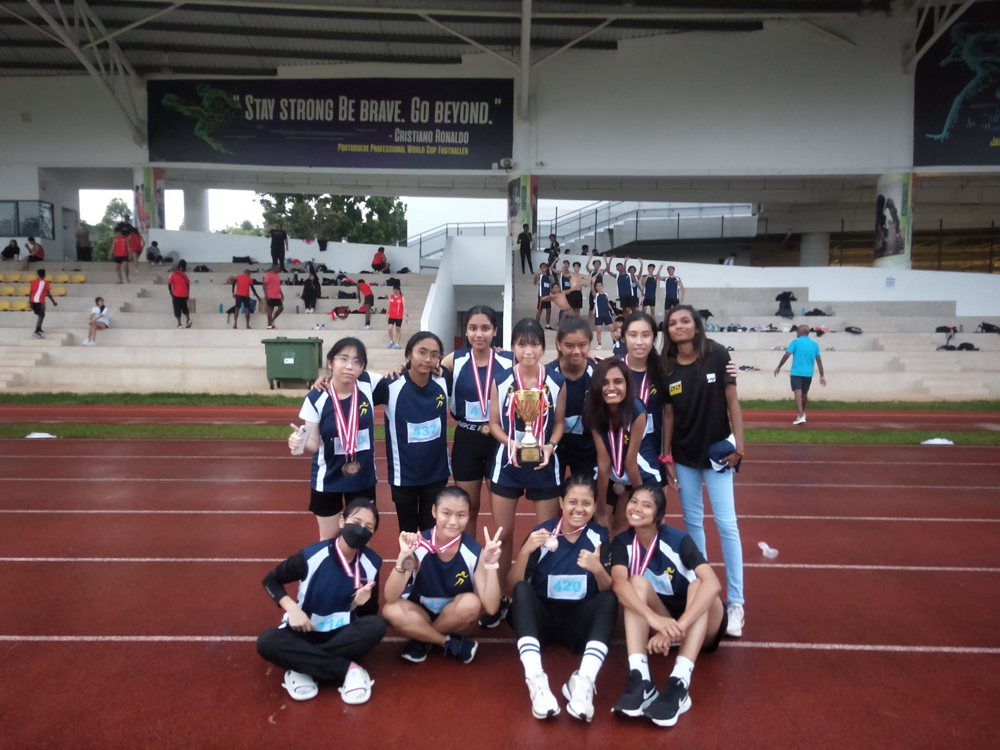

About Me
Amberylin Tan
IT Student & Aspiring Developer
Singapore
English, Chinese
ITE & Nanyang Polytechnic
Education
2024–2027
Diploma in Information Technology
Nanyang Polytechnic
Diploma in Information Technology
Chinese Cultural Club
Athletics Club (Year 1)
2022–2024
Higher Nitec in IT Application Development
Institute of Technical Education (ITE)
CGPA: 3.778
CCA Grade: A, Platinum
Certificate Of Merit (COM)
President of Athletics Club
Member or ACE Club (2 years)
Member of Taekwondo Club (1 year)
Leadership & Activities

Chinese Cultural Club
Current Role: Active Member
Participate in cultural events to enhance traditional presentations. Organized digital exhibitions showcasing Chinese heritage.

Athletics Club
ITE Presidency: 2023-2024
Led a team of 60+ members, organized inter-school competitions, open house and coordinated training schedules and mentored junior athletes.
×